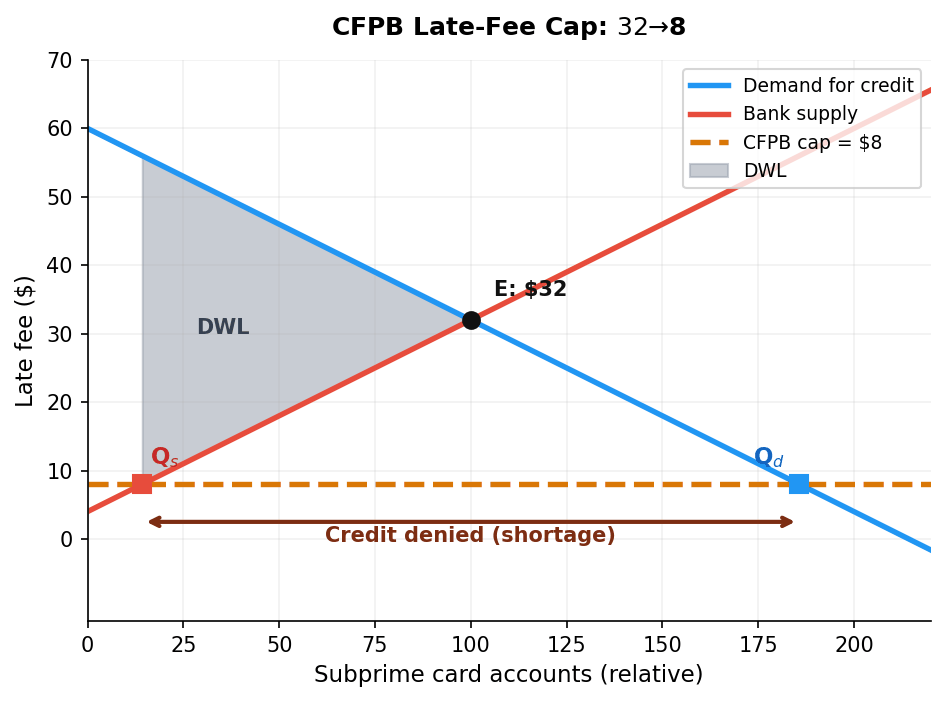
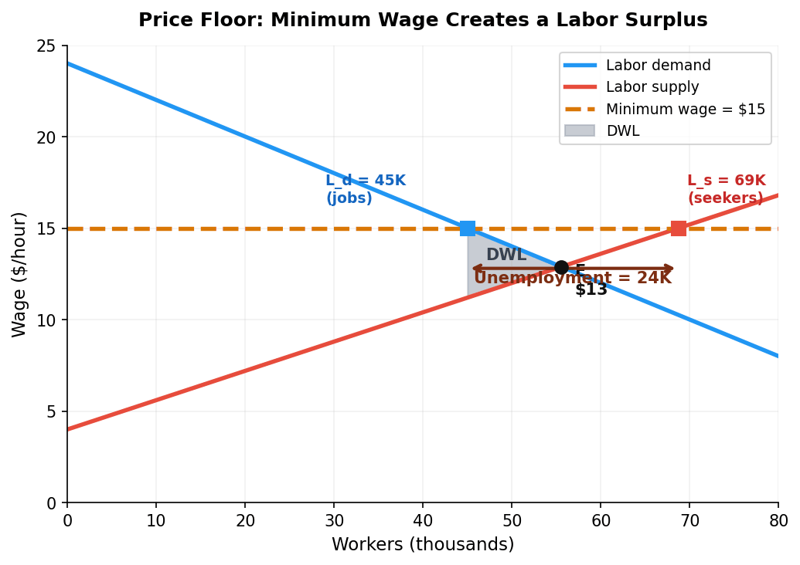
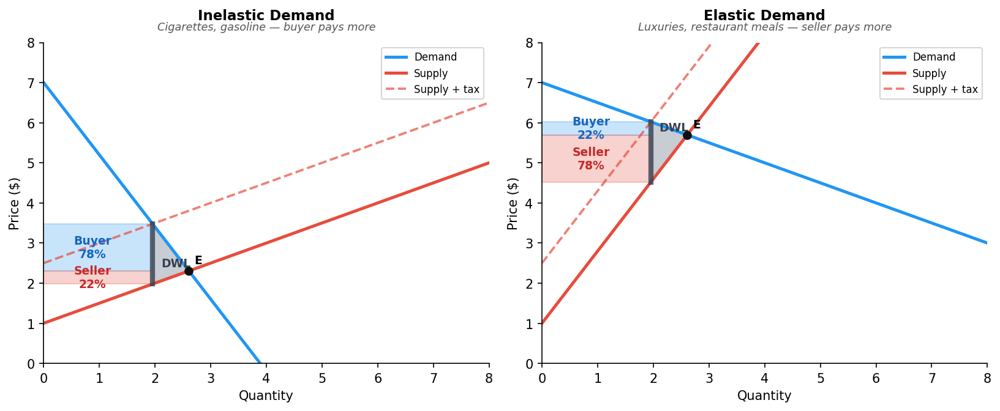
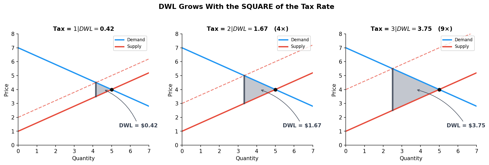
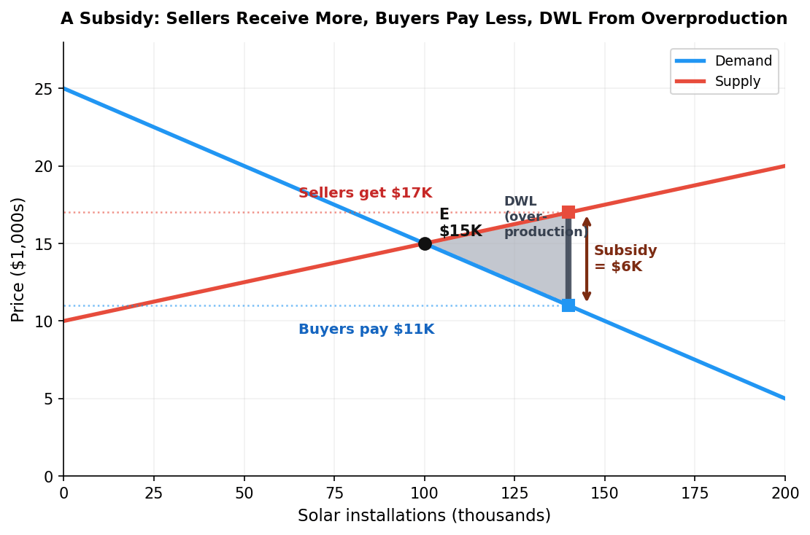
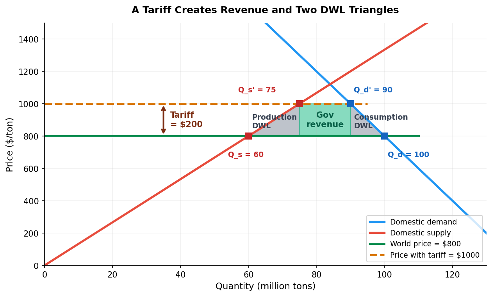

Higher minimum payments → cash-flow strain on stretched households.

Standard binding ceiling: shortage + DWL.
Price Ceiling
Price ceiling: a legal maximum price.
Below equilibrium
BINDING — forces price down → creates a shortage (Qd > Qs)
Above equilibrium
NON-BINDING — market clears at E as if the ceiling weren’t there
Misconception: “Any ceiling affects the market.” A $200 ceiling on something selling for $150 is like a 200 mph speed limit — in place, but nobody notices.
NYC Rent Control: The Textbook Case
~1 million rent-stabilized apartments in NYC. Annual increase cap: 2.75% for 2024 (city inflation: 3.8%).
Result: regulated rent falls further below market every year.
Eq: 10K units at $2,500. With ceiling $2,000: only 7.5K offered, but 13.3K demanded → shortage of ~5.8K units, and a small DWL triangle.
Welfare Effects: Transfer vs. Destruction
Two very different things happen:
1. Transfer
7,000 tenants who keep their apartments pay $500/month less. That surplus moves from landlords to tenants.
Not destroyed — just redistributed.
2. Destruction (DWL)
3,000 apartments disappear from the market. The surplus those trades would have created is gone — not transferred to anyone.
Plus: misallocation — remaining units don’t go to who values them most.
Political confusion: tenants celebrating low rent are celebrating a transfer. The real efficiency cost is the apartments that no longer exist.
Other Price Ceilings in the News
Credit Card APR Caps
2024–25 bills: cap APRs at 10–18%. Subprime equilibrium ~25%. Result: ~75% of riskier borrowers lose credit access entirely.
Medicare Drug Price Caps
IRA negotiated prices on 10 high-cost drugs (Jan 2026). Eliquis, Januvia −38%+. Transfer ~$7.5B/yr. Long-run worry: R&D incentives.
Anti-Gouging Laws
FL activated during Hurricanes Helene/Milton (late 2024). Blocked $6,000/night Airbnbs — but also blocked the price signal that attracts emergency supply.
Same diagram, three very different policy debates.
Poll — Hurricane Gasoline
A hurricane spikes gasoline prices from $3 → $8/gallon. The state imposes a price ceiling of $3.50. Which is the biggest consequence?
A. Everyone gets cheap gas — great policy
B. Stations sell out fast — first-come, first-served
C. Supply from outside the area doesn’t arrive
D. Both B and C — shortage and blocked supply response
Click your answer. 60 seconds.
Poll Results
Answer: D. Shortages and blocked supply response. The price would have signaled trucks in Atlanta to drive gas to Tampa. The ceiling silences that signal — so the shortage is worse and lasts longer.
Better policy: vouchers for low-income drivers + let prices rise. Preserves the signal, protects the vulnerable.
Section 2 · LO 7.1b
Price Floors
When the government says “not below this”
Price Floor
Price floor: a legal minimum price. Binding when set above equilibrium → creates a surplus.
The most-debated price floor in America: the minimum wage.
Federal floor: $7.25/hr since 2009 — 17 years frozen.
State variation: WA $17.13; AL/LA/MS/SC/TN: no state minimum.
Simple model prediction
If equilibrium wage = $12 and floor = $15: more want to work, fewer firms hire. The gap = unemployment.
Card & Krueger: A Phone Call That Won a Nobel
1994 Natural Experiment
NJ raised minimum wage $4.25 → $5.05. PA didn’t. Card & Krueger called 410 fast-food restaurants before and after.
Finding: no employment decline.
Why? Monopsony.
When a few employers dominate a local labor market, they pay below the competitive wage. A moderate minimum can push wages closer to competitive without cutting jobs.
Concept previewed; formalized in Ch 14.
2021 Nobel Prize in Economics: Card shared it for inventing the "natural experiment" approach that now dominates empirical economics. Cengiz et al. (2019) replicated across 138 increases — same conclusion.
Price Floor on the Diagram

Competitive model: wage floor $15 > equilibrium $12.90. Jobs (Ld) fall; seekers (Ls) rise. Gap = unemployment. DWL from lost trades.
California’s $20 Fast-Food Wage
AB 1228 (April 1, 2024)
Chains with 60+ locations: $16 → $20/hr — a 25% jump.
One of the largest sectoral wage hikes in US history.
Clemens-Edwards-Meer (NBER)
Employment: −2.7–3.2% (~18,000 jobs)
Menu prices: +3.3–3.6%
98% of operators raised prices
Lesson: moderate floors may not cut jobs (monopsony slack); large floors visibly do. ~500K kept jobs got a big raise — an equity vs. efficiency call we’ll settle in §7.5.
Sugar: A Price Floor That Costs You at the Candy Aisle
US has supported sugar prices since the 1930s. Domestic sugar: ~$0.42/lb; world price: ~$0.20/lb.
Mechanism: price supports + import quotas (more in §7.5).
Winners: a few thousand domestic sugar growers. Losers: 330M consumers, candy makers, bakers, and the sugar refining workforce that lost jobs to Mexico.
Hershey’s → Mexico. Brach’s → Mexico. Life Savers → Canada.
A textbook example of how concentrated benefits + diffuse costs — the "logic of collective action" — keeps an inefficient policy alive for 90 years.
Discussion — Index the Minimum Wage?
Federal minimum has been $7.25 since 2009. Prices rose ~40%. The real wage fell about 30% without a single political vote.
Should the minimum wage be indexed to inflation, like Social Security benefits?
Arguments FOR indexing
Protects real wages without a political fight
Reduces uncertainty for workers and firms
Arguments AGAINST
Locks in disemployment when recessions hit
Removes democratic accountability
3 minutes — pairs.
Halfway point
5-Minute Break
Press 5 to start the countdown · Back at the top of the hour
Up next: tax incidence and the deadweight loss formula. Why a soda tax and a payroll tax look the same on the diagram.
Section 3 · LO 7.2
Tax Incidence
Who actually pays?
The Equivalence Principle
The person who writes the check is not necessarily the person who bears the burden.
$1 tax on the BUYER
Buyer pays $X + $1 at the pump. The market shifts demand down.
$1 tax on the SELLER
Seller sends $1 per gallon to the government. The market shifts supply up.
Identical outcome. Same wedge, same buyer-price, same seller-price, same Q. The economic burden is set by elasticities, not by legislation.
The Buyer-Share Formula
$$\text{Buyer’s share of tax} \;=\; \frac{E_s}{E_s \,+\, |E_d|}$$
The more inelastic side bears the larger share — it can’t walk away.
Cigarettes: Es = 2.0, |Ed| = 0.5
Buyer share = 2.0 / 2.5 = 80%
Luxury yachts: Es = 0.5, |Ed| = 2.0
Buyer share = 0.5 / 2.5 = 20%
1990 luxury tax killed the US boat-building industry. Congress repealed it in 1993.
Two Markets, Two Burden Splits

Same $1.50 tax, very different burdens. The shape of the curves — not the legislation — sets who pays.
Philadelphia Soda Tax (2017)
The tax
1.5¢/oz on sweetened beverages. Statutorily on distributors.
Sugary drink sales: −33% citywide
Lower-income households: −50%
Child dental decay: −22–34%
Incidence in practice
Most of the distributor tax was passed through to consumers in shelf prices.
Cross-border shopping surged as elasticity rose (suburbs untaxed).
Revenue: $75M (2022) → $73M (2023).
Equity worry: the heaviest burden fell on lower-income consumers with fewer shopping alternatives.
The FICA Payroll Tax — $1.2 Trillion in Incidence
15.3% payroll tax (Social Security + Medicare). By law: 7.65% on employer, 7.65% on employee. Congress called it “equal sharing.”
What the elasticities say
Labor supply is highly inelastic (most people work at most wages). Labor demand is more elastic.
Actual burden
Workers bear roughly all 15.3%. The “employer’s half” shows up as wages that never rose.
Largest applied lesson in tax incidence. The legal split is theater — elasticities run the show.
Behavioral Twist — Tax Salience
Chetty et al. (2009): grocery store field experiment.
Control
Sticker price only. Tax added at register.
Treatment
Tax-inclusive price on the shelf.
Demand fell 8% more when the tax was visible on the shelf.
Statutory incidence can matter — when consumers don’t fully process taxes added later.
Poll — Who Bears the Carbon Tax?
A $50/ton carbon tax raises gasoline prices. Demand for gasoline is inelastic (Ed ≈ 0.3) in the short run. Supply is elastic (Es ≈ 1.5).
Who bears most of the burden?
A. Refineries — they pay the tax legally
B. Consumers — demand is inelastic
C. Split 50/50 by law
D. Foreign oil exporters absorb it
Click your answer. 60 seconds.
Poll Results
Answer: B. Buyer share = Es / (Es + |Ed|) = 1.5 / 1.8 = 83%. Consumers eat the tax.
Why carbon taxes are regressive — and why Canada returns most of the revenue as a per-capita rebate.
Section 4 · LO 7.3
Deadweight Loss of Taxation
The efficiency price of raising revenue
DWL Logic — Malik & Elena
Before the tax
Malik values cleaning at $120. Elena’s cost is $80. They agree on $100. Surplus: $20 + $20 = $40.
After a $50 tax
Malik would have to pay $150 for a service he values at $120. Trade doesn’t happen.
Revenue: $0. DWL: $40.
DWL = the surplus from trades that no longer happen. Not transferred. Just gone.
DWL Grows With the Square of the Tax

Policy rule: tax many goods a little, not one good a lot. A 5% tax on ten goods << a 50% tax on one good.
Feldstein (1999): the US income tax destroys ~30¢ for every $1 raised — about 12x Harberger’s 1954 estimate, because behavior responds.
The Laffer Curve
Tax rate 0% → revenue $0. Tax rate 100% → nobody works → revenue $0. Somewhere in between is the rate that maximizes revenue.
Useful framing, but it’s a hypothesis, not a prescription. The empirical question is: where on the curve are we?
A 2012 survey of top economists: 96% disagreed that a US income-tax cut would raise tax revenue. We’re on the left side.
NY cigarette tax: $5.35/pack. Missouri: $0.17. Smuggling >$1B/year — classic Laffer at work for a single state.
Section 5 · LO 7.4
Subsidies, Tariffs, and Quotas
Wedges that go the other way — and across borders
Subsidies — The Mirror Image of a Tax
A subsidy drives the same wedge as a tax — but the gov pays instead of collects.

Buyers pay less, sellers receive more, and Q rises above the efficient level. The DWL is from over-production.
EV Tax Credits — The Inframarginal Problem
The policy
IRA: up to $7,500 per new EV. Sales +50% in 2023. First three months of point-of-sale: ~$600M consumer savings.
Stanford/SIEPR finding
75% of recipients would have bought an EV anyway. Only 25% are marginal — behavior changed.
Cost per behavioral change: ~$30K per additional EV (vs. $7.5K sticker subsidy). Most of the budget went to people who didn’t need pushing.
Tariffs on Imports

$200 tariff → domestic price rises to $1,000. Producers gain. Government collects revenue. Consumers lose more than that — 2 DWL triangles.
“Liberation Day” Tariffs (April 2025)
Announced April 2, 2025
10% baseline on nearly all countries
China: 34% → later 125%
EU: 20%, Vietnam: 46%
April 9: most paused to 10% for 90 days
Yale Budget Lab
Consumer prices: +3.0%. Average household cost: ~$4,900/year.
Shoes +87%, apparel +65%.
Regressivity (Nov 2025 distributional analysis): bottom decile pays 2.4% of income; top decile, 0.8%. A 3:1 ratio.
Tariffs vs. Quotas — Same Wedge, Different Beneficiary
TARIFF
Raises domestic price
Domestic producers gain
Government collects revenue
2 DWL triangles
QUOTA
Raises domestic price
Domestic producers gain
No gov revenue — "quota rents" to license holders
2 DWL triangles
If foreign governments allocate licenses, U.S. consumers lose twice — once at the cash register, once when rents leave the country.
Every Intervention Creates a Wedge
Policy
Wedge
Winners
Losers
Gov $
Source of DWL
Price ceiling
Legal cap
Buyers who get the good
Sellers; rationed buyers
—
Shortage
Price floor
Legal min
Sellers who still sell
Buyers; surplus workers
—
Surplus
Tax
Revenue wedge
Government
Both sides
+
Reduced Q
Subsidy
Payment wedge
Both sides
Taxpayers
−
Over-production
Tariff
Import tax
Domestic producers
Consumers
+
Reduced imports
Quota
Quantity cap
Producers; license holders
Consumers
—
Reduced imports
Same diagram, six policies. The DWL grows with elasticity in every case.
Section 6 · LO 7.5
Efficiency vs. Equity
When is the leaky bucket worth carrying?
Okun’s Leaky Bucket
Every intervention fails an efficiency test: each creates DWL. Does that mean “never intervene”? No.
Arthur Okun: transferring money from rich to poor is like carrying water in a leaky bucket. The bucket leaks — but the water that arrives may still be worth the trip.
Minimum wage
Dube: poverty elasticity −0.22 to −0.46. 10% increase → 2–5% less poverty.
Tariffs (2025)
3:1 regressivity ratio + DWL. A particularly expensive redistribution tool.
Drug price caps
Billions transferred to patients; CBO: ~13 fewer drugs over 30 years.
Three different leaky buckets. Different answers depending on how much you weight equity vs. efficiency.
The Benefit Cliff — Where EMTR Exceeds 100%
A worker’s raise
$25,000 → $28,000 (a $3,000 raise).
SNAP: −$1,500
EITC: −$600
Medicaid: −$4,000
Total loss = $6,100 on a $3,000 raise.
Effective marginal tax rate
EMTR ≈ 203%
The worker is worse off after the raise. Federal statutory rate at this income: 10–12%.
Welfare design failure. Programs phase out independently, stacking penalties on top of each other. The market signal “work more” is overridden by program design.
Key Takeaways
1. Every intervention is a wedge. Six policies, one diagram — price ceiling, floor, tax, subsidy, tariff, quota.
2. Statutory ≠ economic incidence. The check writer is not the burden bearer.
3. The inelastic side pays. Same rule for taxes, tariffs, and subsidies.
4. DWL grows with elasticity AND with tax2. Doubling the tax quadruples the loss.
5. Equity vs. efficiency is a value judgment. Economists quantify the leakage; citizens decide if the water is worth the trip.
Next time: Chapter 8 — Consumer Choice. We zoom inside the demand curve to see how individuals decide — budget constraints, indifference, and the law of demand from first principles.
Connections
Building On
Ch 4: S&D mechanics — the diagram itself
Ch 5: Surplus and DWL areas — now applied to policy
Ch 6: Elasticities — tell us who bears each wedge
Setting Up
Ch 8: Where demand comes from — individual choice
Ch 14: Monopsony & minimum wage debates in depth
Ch 16: Carbon taxes, cap-and-trade — the same wedge logic
Ch 17: Public goods & tax-financing of public services
Ch 19: Platform regulation — modern price-ceiling debates
The wedge framework is the most reusable tool in this course — memorize the diagram, not just the policies.
Exit Ticket
Congress passes a 25% tariff on imported lithium-ion batteries used in electric vehicles.
Identify two winners, two losers, and one source of deadweight loss — in one sentence each.